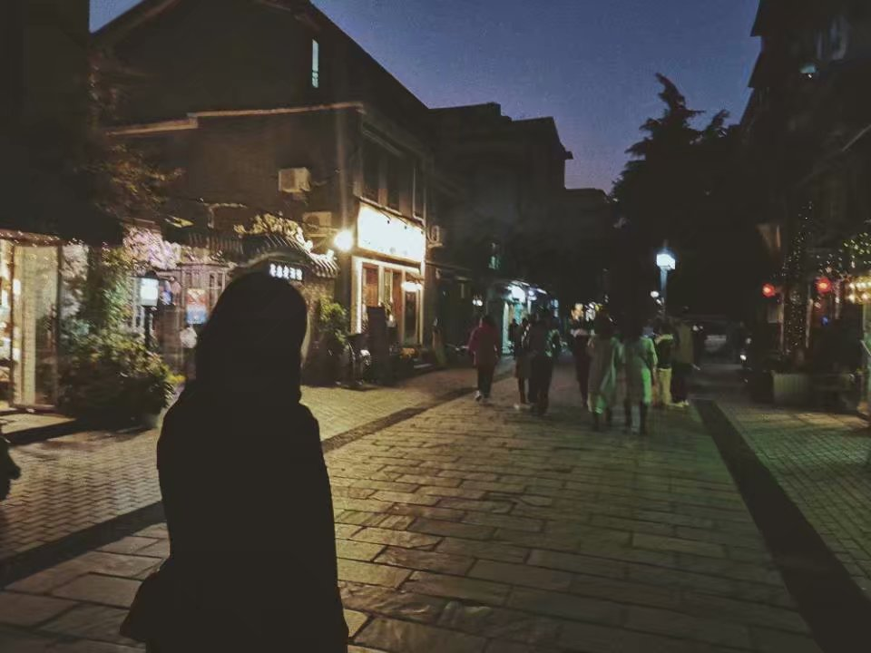
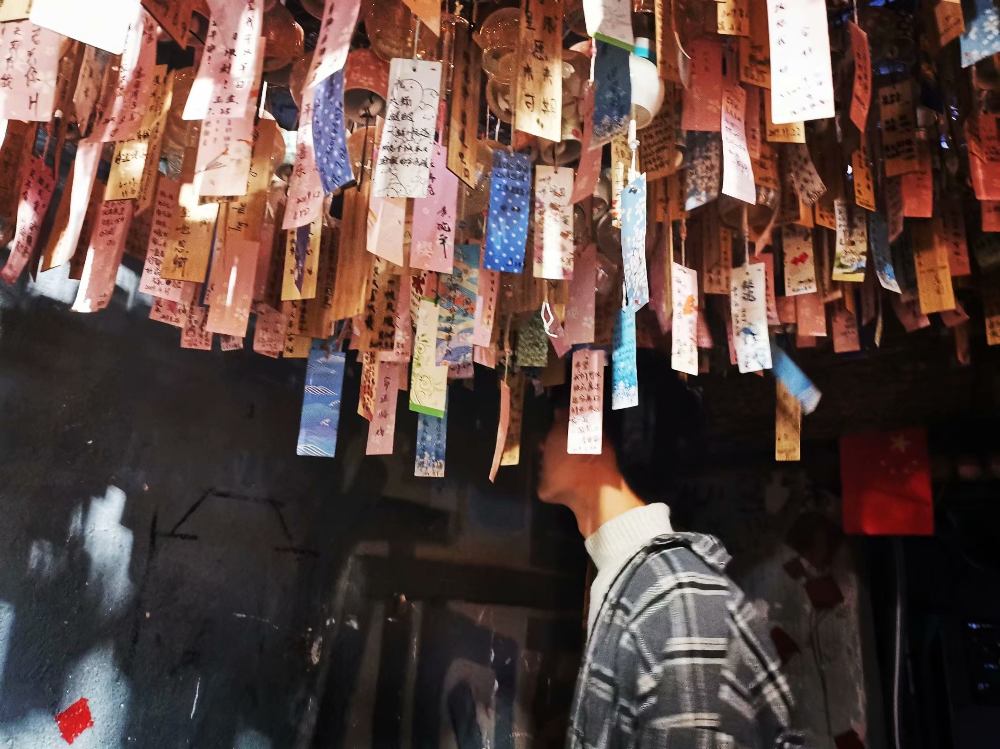
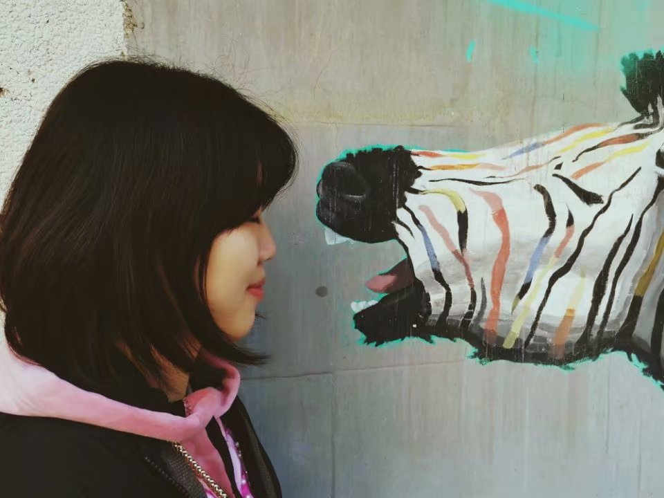
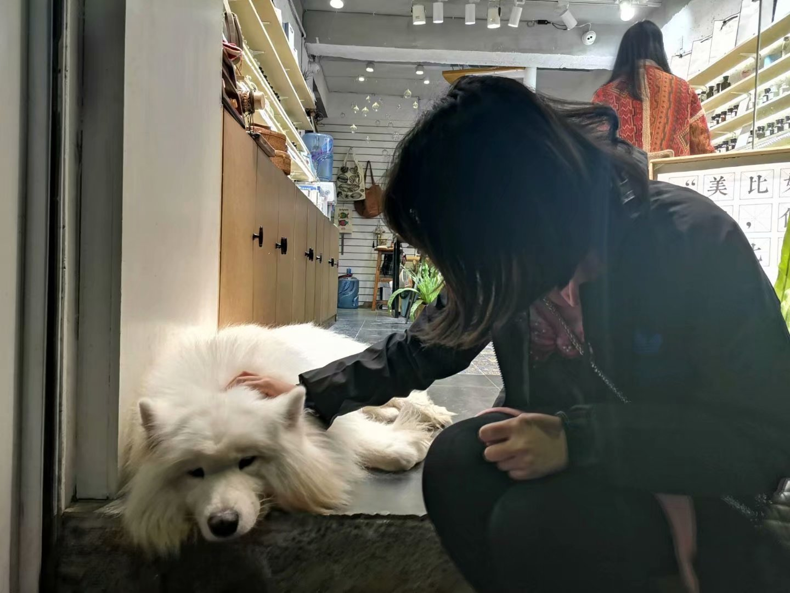

我 的 生 活
在首义校区的时候，经常会在周边的巷子里晃悠，先是户部巷（并不建议去消费哟），后来就去到了昙华林。 昙华林，坐554路公交车在中山路螃蟹岬下车，走过天桥，一直沿着刻有石雕的石板路走就能到。去的时候正巧是秋天，金黄的树叶洒满一地，也有挂在树头的，只是不多了。
 
近几年，昙华林和户部巷一样在外来游客眼里出了名，也渐渐的商业化起来，很难再有什么“老武汉式”的发现。 不过！喜欢摄影拍照的小伙伴们可以来这里哟，有不少取景素材，整体偏向于有年代感，不论是复古还是古风，都可以驾驭。
 